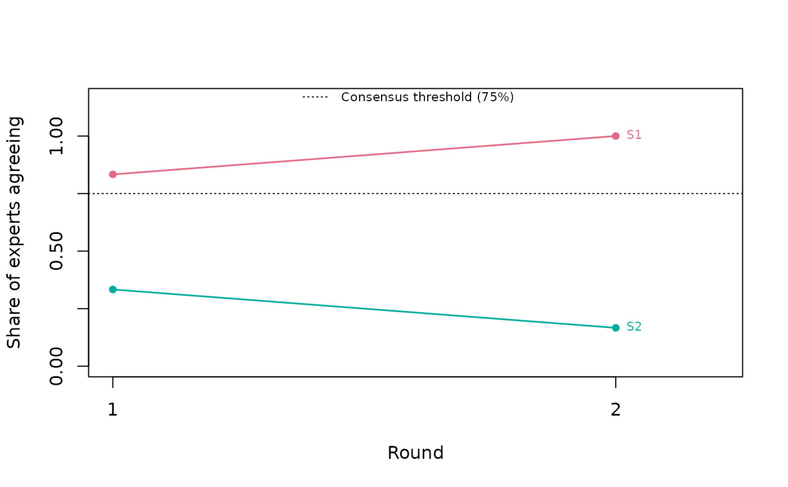
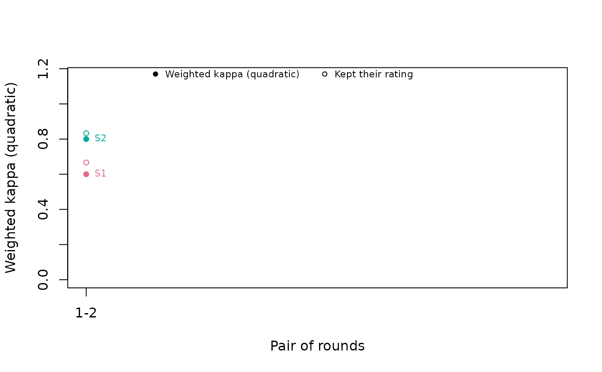

Draws the two questions a Delphi asks, one at a time: whether the panel agrees, and whether it has stopped moving. Both are trends across rounds, which a plot shows better than a table of round pairs.
Arguments
- x
A fitted
contentvalid_delphiobject.- which
"consensus"(default) or"stability".- show_legend
Draw the legend. Defaults to
TRUE.- ...
Passed to
graphics::plot().
Details
which = "consensus" draws each item's share of experts agreeing, round by
round. A line that stops early belongs to an item that settled and was set
aside. The consensus threshold is drawn only when one was set, because the
analysis applies no threshold without it.
which = "stability" draws the stability statistic for each pair of
consecutive rounds, with the share of experts who kept their rating as open
circles. No bands or shaded regions are drawn behind kappa: its verbal
benchmarks are arbitrary, and kappa falls as a panel converges, so a shaded
"good" region would mislead exactly when a Delphi is succeeding. See
delphi_validity().
Examples
r1 <- cbind(S1 = c(4, 4, 3, 4, 2, 4), S2 = c(2, 3, 2, 1, 3, 2))
r2 <- cbind(S1 = c(4, 4, 4, 4, 3, 4), S2 = c(2, 2, 2, 1, 3, 2))
long <- function(m, round) {
data.frame(expert = paste0("E", seq_len(nrow(m))),
item = rep(colnames(m), each = nrow(m)),
round = round, rating = as.vector(m))
}
fit <- delphi_validity(rbind(long(r1, 1), long(r2, 2)), lo = 1, hi = 4,
consensus_threshold = 0.75, B = 0)
plot(fit)

plot(fit, which = "stability")
